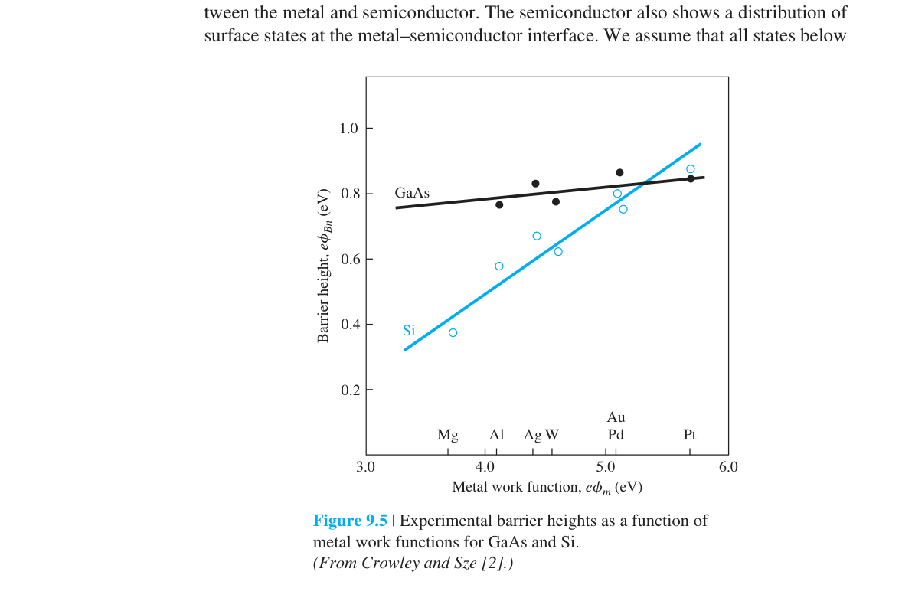
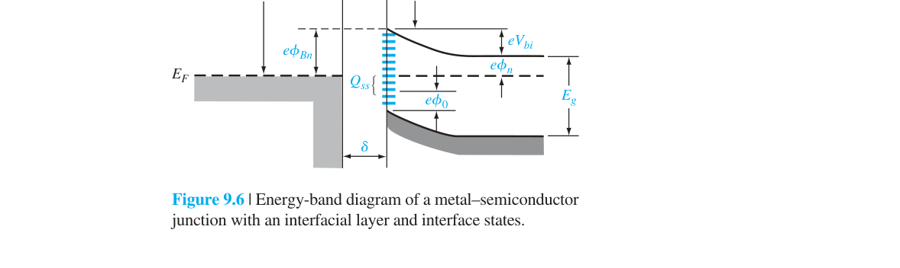
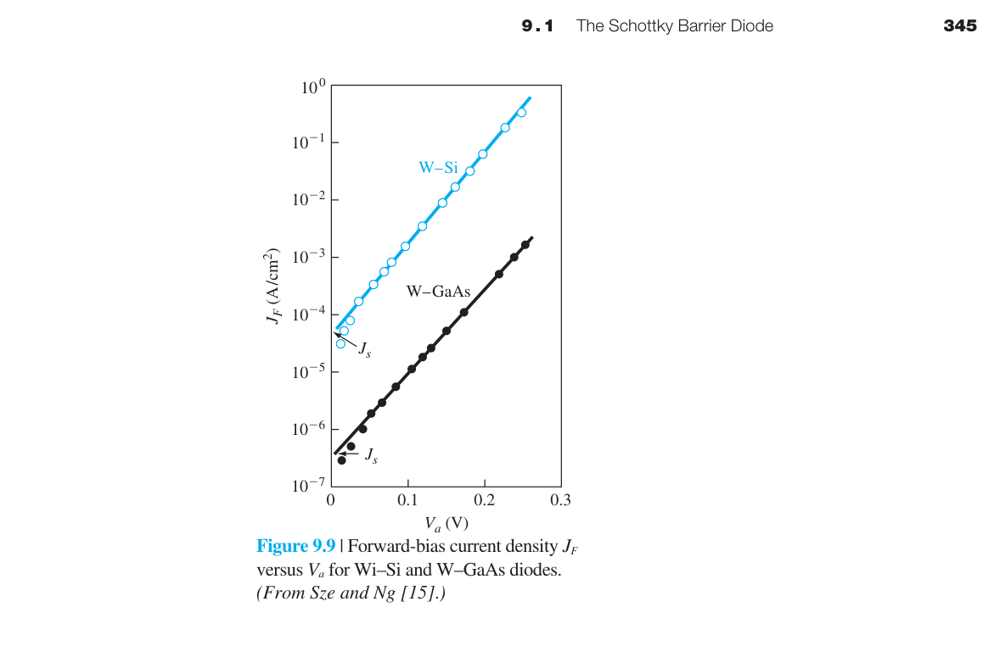
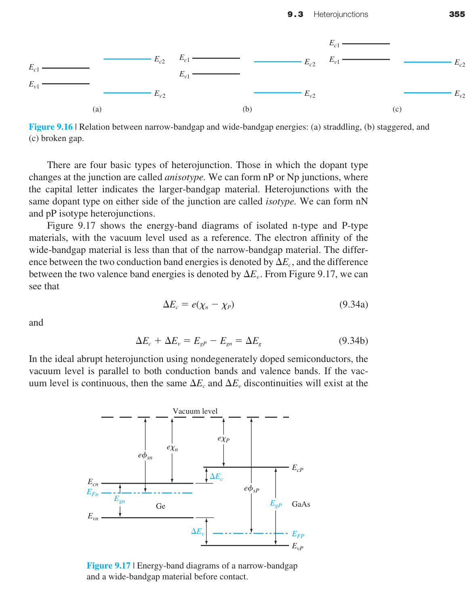

金屬-半導體接面與異質接面
9.0 本章預覽
到目前為止，我們討論的「接面」都是同一種材料中 p 型和 n 型的接觸——所謂的同質接面（homojunction）。但真實的半導體元件不只包含 pn 接面。每一個電晶體、每一個二極體都需要金屬電極把信號和電力從外部世界引入半導體內部。金屬與半導體的接觸就是本章的第一個主題——金屬-半導體接面。
更進一步，把兩種不同能隙的半導體放在一起會發生什麼？這種異質接面（heterojunction）能實現同質接面無法達到的功能——例如把電子和電洞侷限在奈米尺度的薄層中，從而製造出雷射和超高速電晶體。這是本章的第二個主題。
這兩類接面看似冷門，但它們在每一個半導體元件中都是不可或缺的。沒有好的歐姆接觸，你的 MOSFET 源極電阻會吞噬掉大部分的驅動電流。沒有異質接面，就沒有光纖通訊用的雷射二極體、沒有手機中的 HBT 功率放大器、沒有衛星通訊中的 HEMT 低雜訊放大器。
🧭 本章推理地圖
- 材料功函數與電子親和力決定理想能障（§9.1.1–§9.1.2）
- 界面態修正能障，熱離子發射決定整流電流（§9.1.3–§9.1.5）
- 低能障或薄能障把整流接觸改造成歐姆接觸（§9.2.1–§9.2.3）
- 不同半導體的 band offset 形成侷限與 2DEG（§9.3.1–§9.3.5）
- 這些接面成為 MOSFET 接觸與高速元件基礎（Ch10）

9.1.1 蕭特基能障——金屬碰到半導體會怎樣？
想像你把一塊金屬（例如鋁）和一塊 n 型矽緊緊貼在一起。在接觸的瞬間，兩側的電子處於不同的「化學勢」——金屬的 Fermi 能階 $E_{Fm}$ 和半導體的 Fermi 能階 $E_{Fs}$ 通常不同。如果 $E_{Fs} > E_{Fm}$（半導體的電子「更想逃離」），電子就會從半導體流向金屬，直到兩側的 Fermi 能階對齊。
電子的淨流動在界面附近留下不可移動的帶電雜質離子——n 型半導體側留下正的 $N_d^+$ 離子，形成空乏區。這個空間電荷產生內建電場——指向金屬，阻止更多電子從半導體流向金屬。最終達到動態平衡。

在理想情況下（蕭特基-Mott 模型），金屬端的能障高度就是金屬功函數與半導體電子親和力的差值：
這個公式極其直觀：電子在金屬中的 Fermi 能階比真空能階低 $\phi_m$。在接觸後的平衡態，金屬和半導體的真空能階對齊（它們共用同一個表面），而半導體導帶底比真空能階低 $\chi$。所以金屬的 $E_{Fm}$ 比半導體的 $E_c$ 高 $\phi_m-\chi$——這正好是電子從金屬進入半導體導帶需要跨越的能障。
半導體側的能帶彎曲——內建電位 $V_{bi}$：$\phi_{Bn}$ 是從金屬端看的能障。從半導體端看，電子要進入金屬需要克服的能障是 $V_{bi}$。這兩者之間的關係是 $V_{bi} = \phi_{Bn} - \phi_n$，其中 $\phi_n = E_c - E_F = (kT/e)\ln(N_c/N_d)$ 是 n 型半導體中導帶底與 Fermi 能階的能量差。$\phi_n$ 的物理意義是：把半導體的 Fermi 能階「參考」到導帶底需要補上的能量差。
對於 p 型半導體，類似推導給出能障高度 $\phi_{Bp} = \chi + E_g - \phi_m$。注意 $\phi_{Bn} + \phi_{Bp} = E_g$——這不是巧合，而是能帶對齊的自洽要求。對 Si：$E_g=1.12$ eV，所以如果你知道 $\phi_{Bn}$，就自動知道 $\phi_{Bp} = 1.12 - \phi_{Bn}$。
| 金屬 | $\phi_m$ (eV) | Si $\phi_{Bn}$ 理想 (eV) | Si $\phi_{Bn}$ 實際 (eV) |
|---|---|---|---|
| Al | 4.1 | 0.05 | 0.50–0.70 |
| Ti | 4.3 | 0.25 | 0.50–0.60 |
| Au | 5.1 | 1.05 | 0.75–0.80 |
| Pt | 5.7 | 1.65 | 0.85–0.90 |
注意「理想」和「實際」的差異——這就是下一節費米能階釘札的主題。
📝 自編概念例：理想能障
題目：$\phi_m=4.8$ eV、$\chi=4.1$ eV。
解：$\phi_{Bn}=\phi_m-\chi$。
答案：理想 n 型能障為 0.7 eV。
9.1.2 空乏區、電場、電容

一旦理解了 $\phi_{Bn}$ 和 $V_{bi}$，空乏區的分析與 pn 接面幾乎完全相同。金屬側電子濃度極高（∼$10^{22}$ cm⁻³）→空乏區厚度可忽略。半導體側的空乏區與單側突變 p⁺n 接面完全一致（金屬類似 p⁺ 側，無限重摻雜）。
Poisson 方程推導給出空乏區寬度：
這裡 $V_R$ 是外加反向偏壓（如果金屬接負、n 型半導體接正）。$V_R>0$→$W$ 變寬。最大電場在冶金界面處：$E_{\text{max}} = eN_d W/\epsilon_s$。單位面積接面電容：$C_j = \epsilon_s/W$。

反向偏壓提高時，空乏區變寬而電容下降，因此 C–V 曲線本身也能檢查耗盡近似是否合理。
若摻雜不均勻，$1/C^2$–$V$ 不再是單一直線，其局部斜率可用來重建深度摻雜輪廓。
📝 自編概念例：偏壓對電容的影響
題目：反偏增加時 $C_j$ 如何變？
解：$W$ 增加且 $C_j=\epsilon_s/W$。
答案：接面電容下降。
9.1.3 費米能階釘札——為什麼理想預測總是錯的？
如果你對照上一節的表格，會發現蕭特基-Mott 模型預測的 $\phi_{Bn}$ 與實驗值有巨大偏差。例如 Al/Si 的理想 $\phi_{Bn}=0.05$ eV（幾乎是歐姆接觸！），但實際量到 0.5–0.7 eV（明顯的整流接觸）。為什麼？
答案在半導體的表面。晶體在表面突然終止→大量共價鍵懸空（表面態，surface states或稱 dangling bonds）。這些表面態的能階分布在能隙中，密度高達 $10^{12}$–$10^{14}$ cm⁻²eV⁻¹。表面態可以接受或給出電子→在表面建立一個電偶極層→這個偶極層強制半導體表面的 Fermi 能階鎖定在特定的能隙位置——與接觸的金屬種類幾乎無關。

量化 Fermi level pinning：定義表面態的中性能階 $\phi_0$（charge neutrality level）。如果表面態密度 $D_{it} \to \infty$，$\phi_{Bn}$ 被完全釘在 $E_g - \phi_0$。Si 的 $\phi_0$ 約在價帶上方 0.3–0.4 eV→$\phi_{Bn}$ 被釘在 0.7–0.8 eV 附近。GaAs 的 $D_{it}$ 更高→$\phi_{Bn}$ 固定在 ∼0.8 eV，幾乎完全與金屬種類無關。
釘札強度可由實驗能障對金屬功函數的斜率判讀；斜率接近零表示界面態主導。
界面鈍化、插入超薄介電層或改變界面化學，可降低態密度或形成新的偶極，進而調整有效能障。
📝 自編概念例：辨認強釘札
題目：金屬功函數改變 1 eV，能障只改變 0.05 eV。
解：能障響應斜率約 0.05。
答案：界面呈現很強的費米能階釘札。
9.1.4 蕭特基二極體的電流-電壓特性

蕭特基二極體的電流傳輸機制與 pn 接面不同。pn 接面中，少數載子先被注入、然後擴散、最後復合——這是一個擴散主導的過程。蕭特基接面中，電子不需要先成為少數載子——它們直接靠熱能跨越（或穿隧通過）能障頂部。這個過程稱為熱離子發射（thermionic emission）。
物理圖像：金屬中有海量的電子分布在 Fermi 能階附近。這些電子以隨機熱速度運動。其中只有那些能量夠高、且速度方向朝向界面（向 +x 方向）的電子，才有機會跨越 $\phi_{Bn}$ 能障進入半導體。跨越能障的機率自然是 Boltzmann 因子 $e^{-e\phi_{Bn}/kT}$。
其中 $A^* = 4\pi e m^* k^2/h^3$ 是有效 Richardson 常數。對 n-Si，$A^*\approx120$ A/cm²K²；對 n-GaAs，$A^*\approx8$ A/cm²K²（因 $m^*$ 較小）。室溫下 $A^*T^2\approx10^7$ A/cm²。
$J_S = A^*T^2 e^{-e\phi_{Bn}/kT}$ 的數值：對 Si（$\phi_{Bn}=0.7$ eV，$kT=0.026$ eV）：$e^{-0.7/0.026}=e^{-27}\approx2\times10^{-12}$→$J_S\approx2\times10^{-5}$ A/cm²。這比典型 Si pn 接面的 $J_S$（∼$10^{-10}$–$10^{-12}$ A/cm²）大了五到七個數量級。為什麼？因為 pn 接面的 $J_S\propto n_i^2\propto e^{-E_g/kT}=e^{-1.12/0.026}\approx e^{-43}$，衰減遠比 $e^{-\phi_{Bn}/kT}=e^{-27}$ 劇烈。
• 蕭特基優勢：多數載子元件——無少數載子注入→無儲存電荷→無擴散電容→開關速度可達 GHz 級。順向壓降低（0.3–0.5 V vs pn 的 0.7 V）。
• pn 優勢：反向漏電流極低（$J_S$ 小 5–7 個數量級）、崩潰電壓高（適合高壓整流）。
• 典型取捨：電源供應器的輸出整流→蕭特基（效率高）；高壓功率整流→pn（耐壓高）；RF 混頻器/檢波器→蕭特基（速度快）；TTL 邏輯中的蕭特基箝位→防止 BJT 進入飽和（利用蕭特基的 0.3 V 低順向壓降）。
真實 I–V 常以理想因子 $n$、串聯電阻與能障不均勻修正；因此參數應從適當電流區間提取。
📝 自編概念例：能障降低的電流倍率
題目：300 K 時能障降低 0.10 eV，$J_S$ 約增多少？
解：倍率為 $\exp(0.10/0.0259)$。
答案：約 48 倍。
9.1.5 蕭特基二極體與 pn 二極體比較
蕭特基二極體主要靠多數載子越過金屬–半導體能障，不需在準中性區儲存大量少數載子。
因此它的反向恢復很快，適合高頻整流、箝位、混頻與檢波等應用。
較低能障也帶來較大的飽和電流，所以同一電流密度下順向壓降通常比 Si pn 二極體低。
相同原因會提高反向漏電，且實際蕭特基結構的耐壓與高溫漏電往往不如適當設計的 pn 二極體。
元件選擇應同時比較導通損耗、切換損耗、漏電、耐壓、溫度與成本，而不是只看單一 $V_F$。
📝 自編概念例：整流器選型
題目：低壓、高頻且效率優先時先考慮哪一類？
解：切換損耗與順向壓降是主要限制。
答案：先評估蕭特基，但仍須確認漏電與耐壓規格。
9.2.1 理想非整流能障
歐姆接觸的任務是把外部電流送入半導體，而不額外產生整流、顯著壓降或訊號失真。
理想非整流接觸在正、負小偏壓下都容易交換載子，因此 I–V 曲線通過原點並近似線性。
對 n 型半導體，若金屬功函數足夠低，接觸後可形成電子累積而非空乏，電子不必跨越寬厚能障。
對 p 型半導體則需要相反的功函數選擇，使電洞能障小；判斷時必須使用正確載子與能帶方向。
真實界面態與費米能階釘札常使單靠金屬功函數選擇無法得到理想歐姆接觸。
📝 自編概念例：辨認歐姆接觸
題目：一接觸在 ±10 mV 下電流大小相等、方向相反，代表什麼？
解：原點附近呈奇對稱線性響應。
答案：可視為小訊號範圍內的歐姆接觸。
9.2.2 穿隧能障
即使能障高度不低，只要把半導體表面重摻雜，空乏寬度仍可縮短到量子穿隧尺度。
空乏寬度約隨 $N_d^{-1/2}$ 下降，因此摻雜提高會快速增加穿隧機率。
在極重摻雜下，載子不必取得足夠熱能越過障頂，而能直接穿過薄能障。
小偏壓改變兩側可用態的相對佔據，使正反向穿隧電流近似成比例，接觸因而呈現歐姆特性。
實際製程常結合淺接面重摻雜與金屬矽化物，以同時降低半導體與界面電阻。
📝 自編概念例：摻雜提高的效果
題目：摻雜提高四倍時，耗盡近似下 $W$ 如何變？
解：$W\propto N_d^{-1/2}$。
答案：寬度約減半，穿隧機率會大幅上升。
9.2.3 比接觸電阻
比接觸電阻 $\rho_c$ 用來比較不同面積的接觸，其定義是零偏附近單位面積的微分接觸電阻。
均勻電流近似下，總接觸電阻為 $R_c=\rho_c/A$；面積縮小會直接放大端點電阻。
量測時常使用傳輸線模型，把金屬片電阻、半導體片電阻與真正界面電阻分離。
$\rho_c$ 受到能障高度、摻雜濃度、有效質量、溫度與界面品質共同影響，不能只由金屬名稱判定。
在奈米元件中，即使材料的 $\rho_c$ 很低，極小接觸面積仍可能使 $R_c$ 與通道電阻相當。
📝 自編概念例：面積換算
題目：$\rho_c=10^{-8}\ \Omega\cdot{\rm cm^2}$、$A=10^{-10}\ {\rm cm^2}$。
解：$R_c=\rho_c/A$。
答案：均勻近似下為 $100\ \Omega$。
9.3.1 異質接面材料
異質接面把兩種不同半導體相接，使能隙、電子親和力、介電常數與有效質量在界面處改變。
GaAs/AlGaAs 是經典材料系統，因兩者晶格常數接近，可降低界面錯配缺陷。
合金成分可連續調整能隙，因此能帶偏移與載子侷限強度也可成為設計參數。
若晶格失配過大，界面可能產生差排與陷阱，破壞理想能帶圖並增加復合。
選材因此必須同時考慮能帶工程與磊晶品質，不能只追求最大的能隙差。
📝 自編概念例：選擇材料系統
題目：兩材料能隙差很大但晶格嚴重失配，風險為何？
解：磊晶應變可能鬆弛並形成差排。
答案：界面復合與散射可能抵消能帶侷限優勢。
9.3.2 能帶圖

接觸前可用共同真空能階比較兩材料的導帶底與價帶頂。
理想 Anderson 定則以電子親和力差估算導帶偏移：
價帶偏移由能隙差扣除導帶偏移得到，符號必須和材料標號保持一致。
接觸達平衡後費米能階必須水平，載子重新分布造成的靜電位則疊加在原有能帶不連續上。
依導帶與價帶相對位置可形成 Type I、Type II 或 Type III 排列，分別適合不同的侷限與穿隧功能。
📝 自編概念例：求價帶偏移
題目：$\Delta E_g=0.50$ eV、$\Delta E_c=0.30$ eV。
解：$\Delta E_v=\Delta E_g-\Delta E_c$。
答案：$0.20$ eV。
9.3.3 二維電子氣
導帶偏移可在界面形成三角形量子井，使電子在垂直方向受到侷限。
垂直運動形成離散子能帶，而電子仍可在界面平面內近似自由移動，因此稱為二維電子氣。
調變摻雜把施體放在寬能隙材料，電子則轉移到未摻雜的窄能隙通道。
載子與離化雜質空間分離後，庫侖散射減弱，遷移率可顯著提高。
2DEG 面密度由 band offset、摻雜、間隔層厚度與閘極偏壓共同決定，是 HEMT 的通道電荷。
📝 自編概念例：調變摻雜的目的
題目：為何不直接摻雜 GaAs 通道？
解：通道內離化雜質會強烈散射電子。
答案：把摻雜與通道分離可保留載子又提高遷移率。
9.3.4 平衡態靜電學
異質接面在熱平衡下的能帶彎曲比同質接面更複雜——因為兩側的能隙、介電常數、摻雜濃度都不同。平衡條件要求兩側的 Fermi 能階對齊。
以 n-AlGaAs/p-GaAs 為例：電子從 n-AlGaAs 流向 p-GaAs（跨越 $\Delta E_c$ 能障）→在界面兩側形成空乏區。但與同質 pn 接面不同的是，空乏區的電場分布不對稱——因為兩側的介電常數和摻雜不同。Poisson 方程必須在兩側分別求解，界面處的邊界條件是電位移連續：$\epsilon_1 \mathcal{E}_1 = \epsilon_2 \mathcal{E}_2$。
調變摻雜（Modulation Doping）的關鍵：在 HEMT 結構中，只有 AlGaAs 層摻雜（$N_d \sim 10^{18}$ cm$^{-3}$），GaAs 層不摻雜。電子從 AlGaAs 轉移到 GaAs 的導帶中→在界面形成 2DEG。這些電子與母體施體離子空間分離（距離 ∼10 nm）→雜質散射被大幅壓制→遷移率比均勻摻雜的 GaAs 高 10–100 倍。
電荷中性要求兩側空間電荷與界面片電荷總和為零，這提供求解未知耗盡寬度的另一條件。
求解後的電位降必須與內建電位及兩材料的能帶參數自洽，不能把同質接面公式直接套用。
📝 自編概念例：介電常數不同的電場
題目：無片電荷且 $\epsilon_1=2\epsilon_2$，求 $E_2/E_1$。
解：$\epsilon_1E_1=\epsilon_2E_2$。
答案：$E_2=2E_1$。
9.3.5 電流–電壓特性
異質接面的電流傳輸比同質接面複雜得多——因為存在多種並行的傳輸機制：
① 熱離子發射（Thermionic Emission）：載子獲得足夠熱能越過 $\Delta E_c$ 能障→主導高溫和低偏壓下的電流。$I \propto e^{-e\phi_B/kT}(e^{eV_a/kT}-1)$。
② 場助穿隧（Field-Assisted Tunneling）：在高偏壓下，能障被電場壓窄→載子可穿隧通過→電流快速增大。
③ 缺陷輔助復合（Recombination via Interface States）：界面處的缺陷態作為復合中心→類似 pn 接面的 SRH 復合電流。$I \propto e^{eV_a/2kT}$。
實驗上可用溫度依賴與半對數斜率區分機制；若多種路徑並存，單一理想因子不足以描述整條曲線。
異質接面的三種類型
| 類型 | 能帶排列 | 載子侷限 | 例子 |
|---|---|---|---|
| Type I（跨立） | $\Delta E_c$ 和 $\Delta E_v$ 同側 | 電子和電洞在同一層 | GaAs/AlGaAs |
| Type II（錯開） | $\Delta E_c$ 和 $\Delta E_v$ 反向 | 電子在一層、電洞在另一層 | InP/InGaAs |
| Type III（斷開） | 一個的價帶頂 > 另一個的導帶底 | 半金屬行為 | InAs/GaSb |
• 雙異質接面雷射（DH Laser）：AlGaAs/GaAs/AlGaAs 三明治結構。寬能隙的 AlGaAs 層將注入的電子和電洞同時侷限在 GaAs 主動層中。這大幅提高了復合效率→降低了雷射的閾值電流→實現了室溫連續波操作。CD/DVD/Blu-ray 的光讀取頭、光纖通訊的光源，都是異質接面雷射的後代。
• 異質接面雙極性電晶體（HBT）：射極用寬能隙材料（如 AlGaAs）取代 GaAs→$\gamma$（射極注入效率）因為 $N_E$ 項不再出現而大幅提高→$\beta$ 可達數千（傳統 BJT 的 $\beta$ 受 $\gamma$ 限制在 50–200）。HBT 是手機功率放大器和光纖通訊驅動電路的主力。
• 高電子遷移率電晶體（HEMT）：在 AlGaAs/GaAs 異質接面界面處，電子從 AlGaAs 層轉移到 GaAs 層→在界面形成一層極薄的二維電子氣（2DEG）。2DEG 中的電子與其母體施體離子在空間上分離→雜質散射大幅降低→遷移率可達 $10^6$ cm²/V·s（低溫）→極低雜訊、極高頻率的放大。HEMT 是衛星通訊、雷達、和射頻天文望遠鏡中低雜訊放大器的核心元件。
📝 自編概念例：用溫度辨識機制
題目：電流對溫度高度敏感，較支持越障或直接穿隧？
解：熱離子發射含強 Boltzmann 因子。
答案：較支持熱越障主導。
本章摘要
- 蕭特基能障（理想）：$\phi_{Bn}=\phi_m-\chi$。$\phi_{Bn}$ 是金屬端電子跨越的能障，$V_{bi}=\phi_{Bn}-\phi_n$ 是半導體側能帶彎曲。
- 空乏區分析：與 p⁺n 接面完全相同。$W\propto\sqrt{V_{bi}+V_R}$。Mott-Schottky 分析是實驗量測的標準方法。
- 費米能階釘札：表面態（懸鍵）密度使 $\phi_{Bn}$ 對金屬功函數不敏感。Si 的 $\phi_{Bn}$ 通常卡在 0.5–0.9 eV。這是接觸工程的主要挑戰。
- 蕭特基二極體：$J=A^*T^2e^{-e\phi_{Bn}/kT}(e^{eV_a/kT}-1)$。熱離子發射機制的多數載子元件→無擴散電容→極快開關速度。
- 歐姆接觸：低能障（$\phi_m<\chi$）或重摻雜穿隧實現低 $\rho_c$。奈米級 CMOS 中接觸電阻是關鍵瓶頸。
- 異質接面：Anderson 定則 $\Delta E_c=\chi_1-\chi_2$。Type I/II/III 三類。應用：DH 雷射、HBT、HEMT。
| 接面 | 主要傳輸 | 工程用途 |
|---|---|---|
| 蕭特基 | 熱越障／穿隧 | 快速整流與檢波 |
| 歐姆接觸 | 低能障或薄障穿隧 | 低損耗端點 |
| 異質接面 | 越障、穿隧、侷限 | HBT、HEMT、雷射 |
常見錯誤
自我檢核
為何蕭特基二極體通常反向恢復較快？
它主要由多數載子傳輸，不需清除大量注入的少數載子儲存電荷。
重摻雜為何能降低接觸電阻？
它縮窄空乏能障，使穿隧機率呈指數增加。
異質接面處電場一定連續嗎？
不一定；無片電荷時連續的是法向電位移 $\epsilon E$。
延伸學習
可進一步用 C–V 量測提取摻雜、用溫度 I–V 提取能障，並比較 HBT 與 HEMT 如何利用 band offset。數值題見第九章習題頁；下一章進入MOSFET 基礎。
推導、假設與章末診斷
方程式使用契約
- 理想 Schottky–Mott 能障 $\phi_{Bn}=\phi_m-\chi$ 假設界面無氧化層、無界面態、無偶極與無費米能階釘扎。
- 熱離子發射模型要求載子越障為速率限制、平均自由程與界面條件適合；薄能障／重摻雜時須加入穿隧。
- 金半空乏寬度沿用一維 depletion approximation。
- Anderson 異質接面定則假設電子親和力可直接對齊且無界面電荷；真實 band offset 應以實驗或更完整界面模型校正。
中間推導：熱離子發射電流
- 只統計法向動能足以越過 $\phi_{Bn}$ 的電子通量。
- 對 Maxwell–Boltzmann 分布積分，得到 $J_{s}=A^{**}T^2e^{-q\phi_{Bn}/kT}$。
- 偏壓使半導體到金屬的越障率乘 $e^{qV/kT}$，反向通量近似不變。
- $J=J_s(e^{qV/kT}-1)$；非理想界面以理想因子 $n$ 修正指數分母。
章末練習與概念診斷
為何重摻雜可把高能障接觸變成近似歐姆接觸？
重摻雜使空乏層變薄，載子可穿隧而非必須熱越障；接觸電阻因此大幅下降。
Schottky 二極體快的核心原因是較低順向壓降嗎？
不是主要原因；它是多數載子元件，沒有大量少數載子儲存，因此反向恢復快。
延伸計算練習
完成上方診斷後，請在不查公式的情況下重建代表推導，並改變一個參數檢查極限行為。更多含數值與解答的題目：本章完整習題頁。